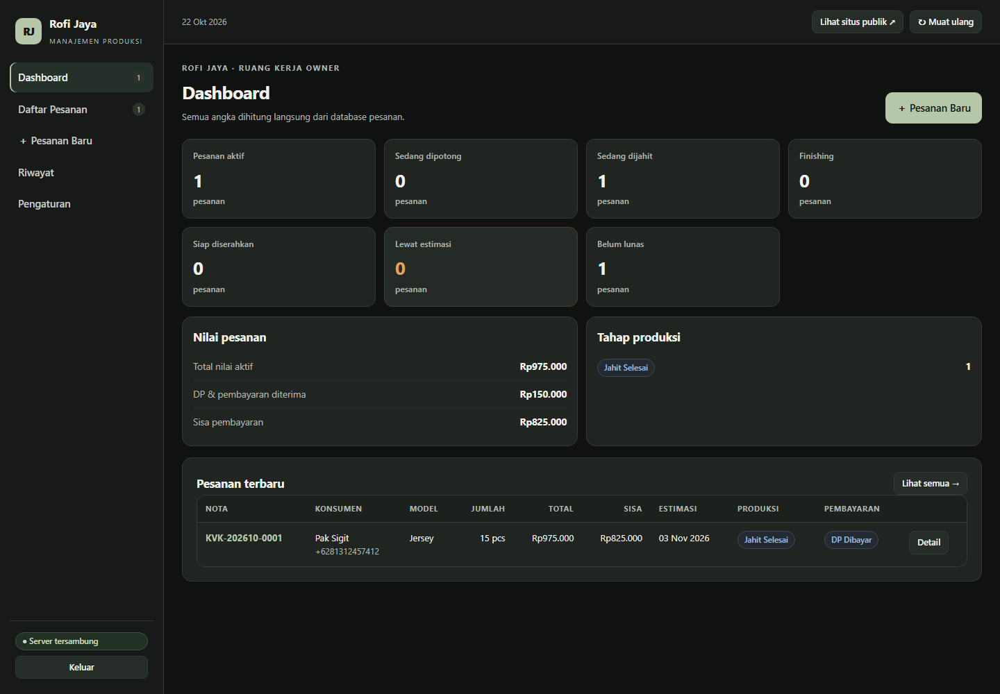

Yang diperbaiki sesi ini
Ditemukan lewat uji browser
- DDL gagal di PostgreSQL —
psycopg2tidak punyaexecutescript(); skema tidak pernah terbentuk di Supabase. - Mode SQLite rusak — pembungkus cursor membuat deteksi database salah; perbaikan tadi harus dibatasi ke Postgres.
- Pesanan lama tanpa kolom
targetmemicuKeyErrorsaat dashboard memuat. - Angka kartu menempel ke labelnya (CSS inline).
- Toast "Silakan masuk sebagai owner" muncul padahal itu kondisi normal sebelum login.
- 404
/favicon.icomengotori console. setup_supabase.pygagal menjalankan uji di Windows (os.system→subprocess).
Hasil uji
- Koneksi Supabase: OK, 8/8 tabel v2.
- Login owner lewat API: HTTP 200.
- Uji alur end-to-end (SQLite terpisah): semua lolos.
- Browser: login → dashboard → detail → tab produksi jalan.
- Overflow horizontal desktop & mobile: 0 px.
- Console tersisa: 1× 401 dari
/api/v2/statesebelum login (normal).
Pratinjau aplikasi

Jalankan aplikasi: python app.py → buka
http://127.0.0.1:8099. Periksa koneksi database: python tools/check_supabase.py.